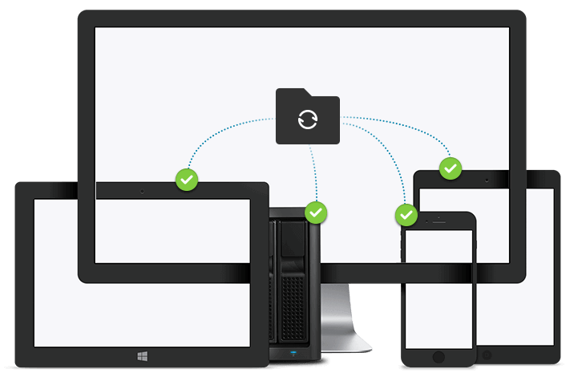
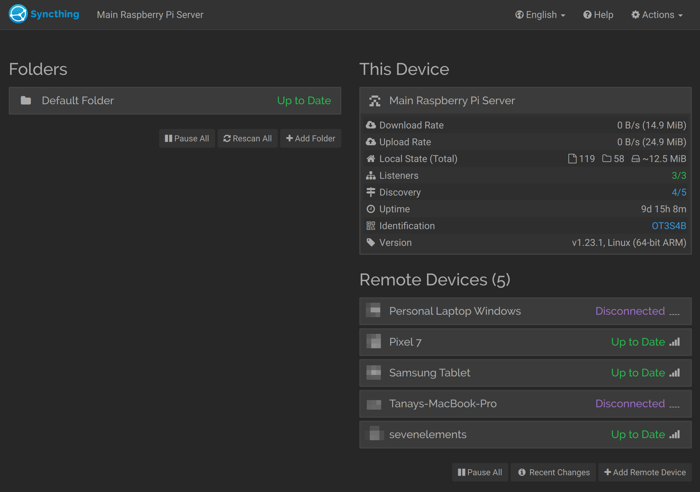
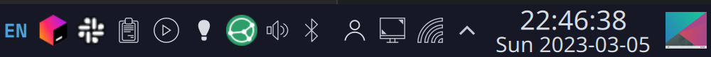
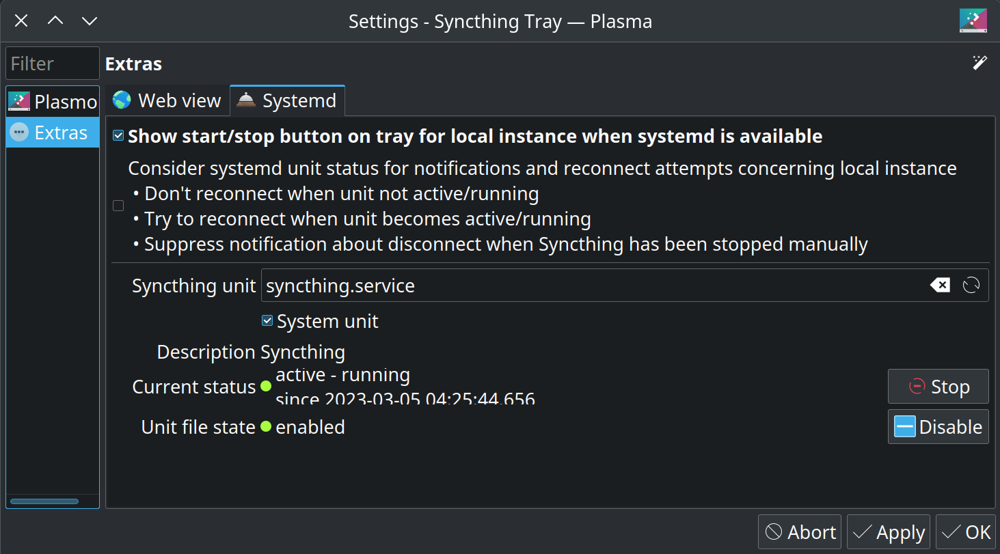

Syncthing Multi-device setup#

In this post I will highlight Syncthing setup on multiple devices, for my personal use. This is ment for synchronizing my password manager file and also the Obsidian notes directory. The Syncthing setup covers all the types of devices that I own: Linux, Mac OS, Windows, Android. There’s a way I’ve hosted Syncthing on all these devices which makes my life easy. Hope it makes your life easy as well.
Why Syncthing?#
Well, initially I was using rclone to synchronise the password manager file which is generated by KeePassXC, more details here. I was happy with it till I moved to using Obsidian to synchronise via rclone and that led to a lot of conflicts and maintenance issues. I initially tried using Syncthing with just Obsidian and really fell in love with it. Then I simply went ahead to use it with KeePassXC as well.
Setup#
The setup of Syncthing is split into the following steps:
Install and run on a central server (Raspberry pi)
Install on personal Linux (Arch Linux)
Install on Android (phone and tablet)
Install on macOS
Install on Windows
Installing on a central server (Raspberry PI)#
The main aim of having this central server is to always keep it on so that there will be at least one device which is up to date at any given point of time. This is one of the most complicated setup among all other devices since it does not have a GUI running on the machine. Before doing anything else the first thing is to install Syncthing on Raspberry Pi. Currently I’m running Ubuntu Server on the Raspberry Pi, so the installation is meant for that.
In order to install Syncthing, run:
sudo apt install syncthing
Let’s start the Syncthing service on Ubuntu
sudo systemctl start syncthing@ubuntu.service
Check if the service has started properly
sudo systemctl status syncthing@ubuntu.service
You should see something similar to the following
● syncthing@ubuntu.service - Syncthing - Open Source Continuous File Synchronization for ubuntu
Loaded: loaded (/lib/systemd/system/syncthing@.service; enabled; vendor preset: enabled)
Active: active (running) since Fri 2023-02-24 07:03:07 IST; 1 week 2 days ago
Docs: man:syncthing(1)
Main PID: 782 (syncthing)
Tasks: 20 (limit: 9237)
Memory: 99.2M
CPU: 42min 32.483s
CGroup: /system.slice/system-syncthing.slice/syncthing@ubuntu.service
├─ 782 /usr/bin/syncthing serve --no-browser --no-restart --logflags=0
└─1022 /usr/bin/syncthing serve --no-browser --no-restart --logflags=0
Make sure you enable the service, so it starts automatically you reboot the server
sudo systemctl enable syncthing@ubuntu.service
Now, in order to add devices to this, we need to expose this onto the local network. The most dangerous thing is exposing this over the internet. Since my Raspberry Pi is currently running a web server exposed to the internet, I need to be extremely careful with how I expose Syncthing GUI. I therefore wrote the following script: (toggle_expose_syncthing.py)
import subprocess
import typer
@typer.Typer().command(help="Command to toggle syncthing between 127.0.0.1 and 0.0.0.0")
def main():
result = subprocess.run("syncthing cli config gui raw-address get".split(" "), capture_output=True)
if b"127.0.0.1" in result.stdout:
subprocess.run("syncthing cli config gui raw-address set 0.0.0.0:8384".split(" "))
print("Exposing to 0.0.0.0")
else:
subprocess.run("syncthing cli config gui raw-address set 127.0.0.1:8384".split(" "))
print("Exposing to 127.0.0.1")
if __name__ == "__main__":
typer.run(main)
*Make sure that Typer package is installed
After running this script, your Syncthing should be exposed to the local network. Try to find the IP of your server:
ip address
And enter that IP address with the port 8384 into the browser. It should open the following screen:

Make sure to quickly set a password for this GUI since it’s the most vulnerable as it’s frequently exposed to 0.0.0.0. At this point you can start adding remote devices one by one. Starting right from personal laptop, phones, tablets etc. Make sure you select the option to share the Default Folder with all the devices that you add.
Once you’re done adding all the devices, you can toggle off the exposure of Raspberry Pi Syncthing server by running the same Python script that I wrote above.
Install on personal Linux (Arch Linux)#
On Arch Linux Syncthing comes packaged in the Pacman community repo. You simply have to run:
sudo pacman -S syncthing
You might want to run the same steps as above to start, check and enable the syncthing service on Arch Linux.
sudo systemctl start syncthing
sudo systemctl status syncthing
Should give you this output:
● syncthing.service - Syncthing
Loaded: loaded (/etc/systemd/system/syncthing.service; enabled; preset: disabled)
Active: active (running) since Sun 2023-03-05 09:55:44 IST; 12h ago
Main PID: 714 (syncthing)
Tasks: 28 (limit: 38033)
Memory: 89.8M
CPU: 1min 21.437s
CGroup: /system.slice/syncthing.service
├─714 /usr/bin/syncthing
└─736 /usr/bin/syncthing
And then enable it, so it autostart on next boot:
sudo systemctl enable syncthing
In order to be able to see the connection of Syncthing on the KDE Plasma tray, I also went ahead to install the syncthingtray package from the AUR.
Once the Syncthing icon appears on the tray as follows and your service is running in the background, you’re free to configure it.

Open the Syncthing Tray settings and point it to the Syncthing service unit running right now as shown below. Once this is done, the gray icon should turn blue and you should be able to see syncs happening in real time and all the connected devices by clicking that icon.

Next step is to simply open web GUI and add the devices and share the Default Folder with all of them.
Install on Android#
This is among the most easy Syncthing installation. Simply download Syncthing from either the Play Store or from F-Droid. Once you start the server, it should automatically start a background service which you should be able to see in the notifications drawer.
Next step is to simply add the devices and share the default folder with them. I’m not sharing too manny details here since it’s very intuitive and very straightforward. Just a couple of screenshots of the app below.
{kind=link}
{kind=link}
Install on macOS#
Another easy installation on a device. Simply go to Syncthing website and download the Syncthing .dmg image and install it. After starting Syncthing you should be able to see the status icon on the Mac menu bar on top. Click it and click open.
{kind=link}
That should open the web view in your default browser. Next step is to simply add the devices and share the Default Folder with all of them just the way we did above. Also, don’t forget to add this to your autostart.
Install on Windows#
Last but not the least let’s proceed with installing another easy installation on Windows. Go to the Syncthing website and download the SyncTrayzor Windows tray utility and install it. Once it is up and running in the tray in your Windows Taskbar you should be able to click it and click Open SyncTrayzor . Here you can follow the same ‘ol simple steps of adding devices and sharing the Default Folder with them.
Once all the above is done, you should be all set to use Syncthing to be used for syncing your KeePassXC passwords, Obsidian notes and much more across multiple devices.
If you have any doubts/questions leave them in the comments below.